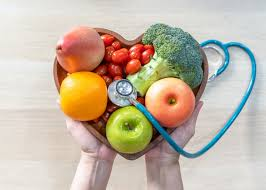

مرض السكري: أنواعه وأعراضه
اقرأ المزيد
السكري نوعان: الأول يعتمد على الأنسولين، والثاني يظهر بعد سن الأربعين ويرتبط بنمط الحياة. تشمل الأعراض العطش الشديد، وكثرة التبول، وفقدان الوزن.

صحة القلب: كيف تحافظ عليها؟
اقرأ المزيد
تناول الطعام الصحي، الابتعاد عن التدخين، ممارسة الرياضة بانتظام، والفحوصات الدورية كلها عوامل مهمة للحفاظ على قلب صحي.

الصحة النفسية: لماذا نهتم بها؟
اقرأ المزيد
الصحة النفسية لا تقل أهمية عن الجسدية. من المهم التحدث عن مشاعرك وطلب المساعدة عند الشعور بالاكتئاب أو القلق أو التوتر.

الكشف المبكر: سلاحك ضد السرطان
اقرأ المزيد
الفحص المبكر يساعد في كشف السرطان قبل تطوره، ما يزيد من فرص العلاج والشفاء، خصوصًا لسرطان الثدي والقولون.